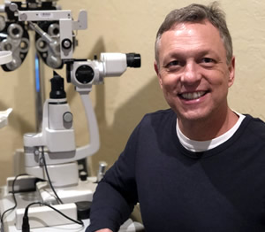
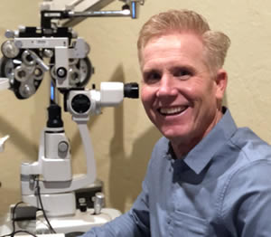
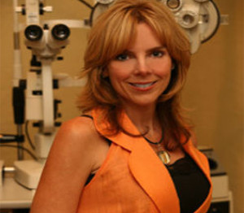
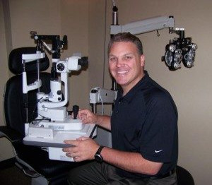

Doctors & Staff
Meet the experienced and friendly doctors and staff who make Norman Vision Clinic the leading provider of vision care products and services in Norman.
Troy A. Flax, O.D.
(Norman Location)
Dr. Troy Flax attended the University of Oklahoma and received his undergraduate degree at Northeastern State University in Tahlequah. He entered Northeastern State University College of Optometry in 1989 and graduated with honors in 1993. After receiving his Doctor of Optometry degree, Dr. Flax entered the Army for a three year tour. Captain Flax was the Chief of Optometry at the Ft. McClellan Army Hospital from 1993-1995. He then returned to Norman to establish a private optometric practice. Dr. Flax became the associate of Dr. James Ryan, and eventually acquired the practice following Dr. Ryan’s retirement. The practice was moved one block south to main street where Dr. Pepper Martin joined with Dr. Flax to create Norman Vision Clinic. The 10,000 square foot comprehensive eye care clinic is a state of the art facility with six examination rooms and offers the finest ophthalmic diagnostic equipment available. There is also an on-sight optical shop with a highly trained staff and top of the line lenses and frames to complete this extensive clinic. In 2000, Dr. Flax was the proud recipient of Norman’s Optometrist of the Century award and received Optometrist of the Year every since since (except in 2004 when Dr. Martin won it!) In 2006, the clinic moved to their present location at 2501 Boardwalk. This beautiful new building contains nine exam rooms and the most current technology available to help serve his patients better. He lives in Norman with his wife, Jenny, and their four children. He has lectured to other optometrists and optometry students nationally and internationally on such topics as contact lenses, pharmaceuticals, and new technology. He has also authored articles for eye care journals. Dr. Flax is an avid fisherman and golfer who enjoys nothing more then watching the O.U Sooners play on fall Saturdays.
Pepper Martin, O.D.
(Norman Location)
Dr. Martin received his Bachelor of Science degree from Northeastern State University in 1993 and went on to receive his Doctorate of Optometry degree in 1994 from Northeastern State University of Oklahoma College of Optometry. He has been in practice with Norman Vision Clinic since his graduation. Dr. Martin is a member of the American Optometric Association, A.O.A. Contact Lens Section and the Northeastern Optometric Association from 1989-1994. He has been published in the Journal of the American Optometric Association and is involved with Kiwanis, Family Life Center and he is a board member at First Baptist Church, Norman.
Tiffany Rankin, O.D.
(Norman Location on Wednesdays)
Jeff Pettigrew, O.D.
(Norman Location)
Melanie Newcomer, O.D.
(Moore on Mon, Wed, and Fri. Norman On Tues and Thurs)

Tanya Ingels, O.D.
(Norman Location on Wednesdays)
Max Venard, O.D.
(Moore Location)Jacob Bellamy, O.D.
(Norman Location)
Dr. Bellamy was born and raised in southwest Oklahoma and grew up in the town of Anadarko. He began his collegiate career in Dodge City, KS playing junior college baseball before transferring to Southwestern Oklahoma State University in Weatherford to earn his bachelor’s degree in Biological Sciences. Dr. Bellamy continued his education in Tahlequah at Northeastern State University Oklahoma College of Optometry where he received his Doctorate of Optometry. In his spare time, Dr. Bellamy enjoys spending time with friends and family, staying active, golfing, movies, sports, music, and traveling. Dr. Bellamy provides personable comprehensive primary eye care: prescription glasses, sunglasses, blue-light blocking lenses, contact lens fitting and training, and provides consultation and management for refractive surgeries, such as LASIK and PRK. Dr. Bellamy treats and manages ocular disease such as: Diabetes, Glaucoma, Age-Related Macular Degeneration, eye infections, and dry eye. Dr. Bellamy is a member of both American Optometric Association (AOA) and Oklahoma Association of Optometric Physicians (OAOP). As of July 2021, Dr. Bellamy has joined Norman Vision Clinic and is currently seeing patients on Tuesdays, Wednesdays, and Thursdays.
Home|About us|Promotions|Patients|Contact
Copyright © 2021 Norman Vision Clinic, Inc.
All Rights Reserved.